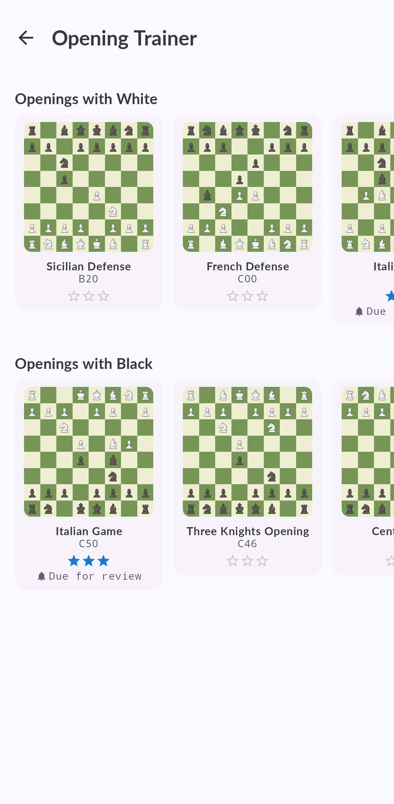

A chess opening trainer with spaced repetition, and a rival that plays like a human
Memorising lines is only half of it. Chess Coach drills the moves of your repertoire until they stick, tells you when a line is due for review, and then lets you play that same line against Maia, a network trained on real club games, so it goes wrong the way people go wrong.

Why openings slip out of your head
You learn a line, you do not see it on the board for three weeks, and when it finally appears you are on your own by move six. Reading the same line again does not fix that. Recalling it, at the moment you are about to forget it, does.
That is spaced repetition: each line comes back after a gap that grows every time you get it right and shrinks when you miss it.
How the trainer works
- Build your repertoire. Choose the openings you actually play, as White and as Black.
- Play the moves, not the theory. The trainer sets up the position and you play your move on the board. If you do not know it, it shows you, and the line comes back sooner.
- Earn the stars. Each opening in your repertoire has three stars and a marker that tells you when it is due for review, so you always know what to practise today.
- Then play it for real. In the Opening Lab you play the same line against Maia and carry it into the middlegame. You choose the level: each one plays like a human of that rating.

Why practise against Maia
A normal engine answers your opening with the best move every time, which is not what happens at your club. Maia was trained to predict the moves real players make at a given rating, so it plays the replies you will actually face, including the mistakes you should know how to punish.
What is free
The Italian Game is free, in full and from both sides, so you can try the whole cycle before deciding. Every other opening, in the trainer and in the Opening Lab, is Premium.
Questions
What is the best way to learn chess openings?
Which opening should a beginner learn?
What is spaced repetition in chess?
Does it work on iPhone and Android?
Keep training
Take the coach with you
Start free on iPhone, iPad or Android. No ads, and no subscription needed to play, analyse or take the first course.
Sign in and your games, ratings and progress follow you to the other device.

The home screen, on an iPhone. Same app on Android and iPad.